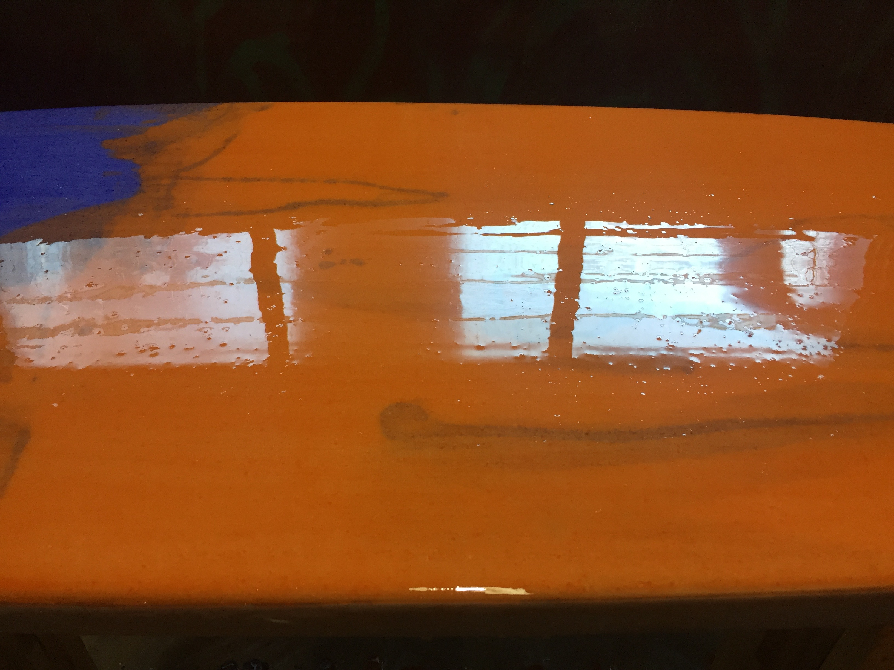

Self-Made Surfing
Teaching myself the fine art, craft, and skill of building your own surfboard.
Having started at the age of 8, surfing has always been an integral part of my life so it was only a matter of time before I started dabbling in the art and craft of board building. I'm still fairly new to it, but have already learned so much and am absolutely loving the process. Besides, there's no better feeling than surfing a board you've made yourself.
#1 Cardboard Core
Laser cut cardboard core · Entropy resin · fiberglass cloth
{kind=link}
{kind=link}
{kind=link}
Learnings
- Assembly - Using clear packaging tape to join the stringer cardboard pieces results in surprisingly not-so-clear joinery. Next time I'd tried using a clear drying glue such as Elmer's for a hopefully clearer finish.
- Glassing Corners - Shaping fiberglass around unstructured corners and crevices is hard. The swallow tail innard and tips was by far the hardest part of glassing the board. Having missed the innard part of the tail during the first lam made patching it pretty difficult as there was nothing to rest the patch on (such as foam in a traditional board, or the first layer of glass). A dart should be cut out of the glass for each of the corners (not just a slit, but an actual v-shaped dart).
- Pinholes on Finboxes - Watch for pinholes! This is a concern everywhere but especially here as this is the most vulnerable part of the board and extra care needs to be taken to ensure a solid and watertight glass job (cough this is where the initial leak occured).
#2 The Biscuit
EPS foam · Entropy resin (tinted) · flax + fiberglass cloth
{kind=link}
{kind=link}
{kind=link}
Learnings
- Flax Lamination - The flax cloth soaks up way more resin than standard fiberglass cloth so have some extra mixed resin on hand!
- Flax Sanding - The flax cloth does not sand well at all. When sanded, it doesn't break up like fiberglass does. Instead, the resin portion gets sanded while the cloth itself remains intact leaving you with dry, but ruffled cloth.
- Lamination Air Bubbles - Sometimes on the initial lam, there can be trapped air bubbles between the cloth and the board after it's cured. Cut these open so the resin from the hotcoat can fill it in.
- Gassing Hot Coat - EPS foam is known to "gas". Basically, air trapped inside the foam has a tendency to try and escape as the resin heats up while curing, resulting in tiny air bubbles called "fish eyes".
To fix this:
- lightly sand the initial hotcoat
- apply another hotcoat layer to fill in all of the bubbles/dimples
To prevent this next time, apply the hot coat in 2 steps as follows:- first apply a thin "paste coat" using the squeegee and allow to tackify (roughly 1-1.5 hours)
- once tackified, apply a regular hotcoat using the brush
- Contamination - Be more careful not to contaminate shit! Use gloves when handling the board post lamination. Don't reuse tainted mixing cups. Only use paper towels or a white t-shirt to wipe down the board.
{kind=link}